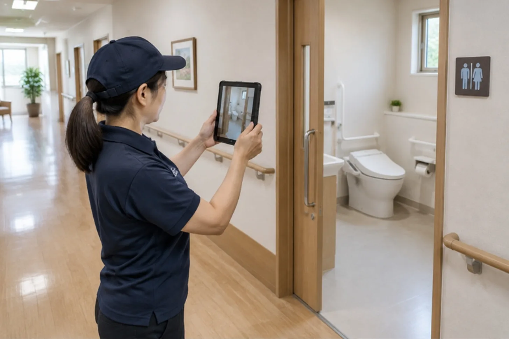

CLEAN CARE JOURNAL / 介護・福祉施設 #06
清掃の記録を、
職員の手間なく残す方法。
「やったはず」は、記録になりません。介護施設では、清掃は毎日あるのに、誰が何をいつ終えたかが残らないことがよくあります。記録を増やすと職員の手が止まる。記録がないと、あとで説明できない。その間で、いちばん軽い形を探します。

01 / NO RECORD「やったはず」は、残らない。
清掃は、やる人がいるから回ります。ただ、やったことが記録に残らないと、次の人は前の人の仕事を確かめられません。床が滑ったとき、トイレの水が止まらなかったとき、「いつ、誰が、どこまでやったか」が分からないと、原因を探すのに時間がかかります。
記録の目的は、人を疑うためではありません。引き継ぎと、あとで説明するためです。その目的を先に決めると、残す量も決まります。
02 / THREE BOXES欄は三つまで。
記録用紙を大きくすると、書く人が減ります。よく使われる形は、次の三つで足ります。
- いつ
時刻か、時間帯の印だけ。「朝」「昼」「夜」の三択でも、記録としては十分な場合があります。
- どこ
部屋の名前、またはエリアの番号。食堂・浴室・廊下のように、施設で通じる言葉にします。
- 済んだか
丸を付けるだけ。気づいた異常があるときだけ、一言を添えます。
「何をしたか」の詳細は、手順書の側に置きます。記録は、終わったかどうかを残す紙。やり方を書く紙とは分けます。
03 / ONE EVENINGある施設の、ある夕方。
これは説明のための場面です。
夕方 17 時、共用廊下の清掃が終わる時間です。担当の職員の方が、手すりの拭き取りを終えて、壁のボードに丸を一つ付けます。書いたのは「夕・廊下・済」。それだけで、夜勤の方は、廊下の手すりがどこまで済んでいるかを一目で見られます。
その日、食堂の床だけ水の跡が残っていた。職員の方は、丸の横に小さく「食堂・水跡あり」と書きました。翌朝、清掃の担当が最初に見たのがその一言でした。記録が増えたのではなく、必要な一言だけが残った場面です。
04 / WHERE置き場所は、動線の途中に。
記録の紙を事務所の机に置くと、現場から離れた場所で書くことになり、後回しになります。ナースステーションの脇、洗面台の横、清掃用具の棚の扉の内側。職員の方が通るところに、書く場所を一つ作ります。
書く量は少なく、書く場所は近く。この二つが揃うと、記録は続きます。続かない記録は、どれだけ丁寧でも残りません。
持ち帰り
- 記録の目的を先に決める。人を疑うためではなく、引き継ぎと説明のため。
- 欄は三つまで。いつ、どこ、済んだか。詳しいやり方は手順書へ。
- 置き場所は動線の途中に。書く場所が遠いと、記録は続かない。
クリーンケア専用ダイヤル070-3220-4946
※営業・勧誘のお電話はご遠慮ください
場面の描写は説明のための例で、特定の施設・案件・実績を表すものではありません。記録の保存期間や様式は、施設の方針と運営基準に従ってください。